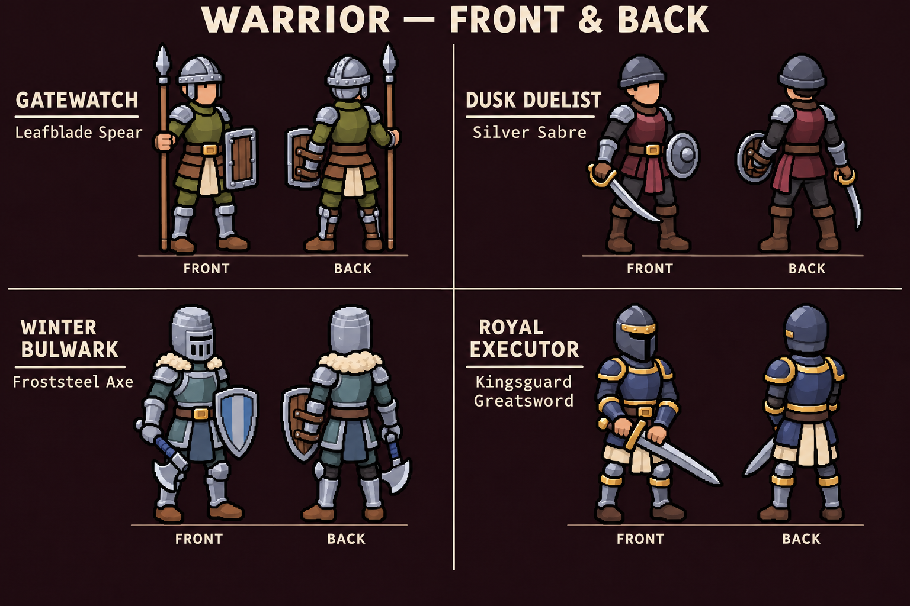
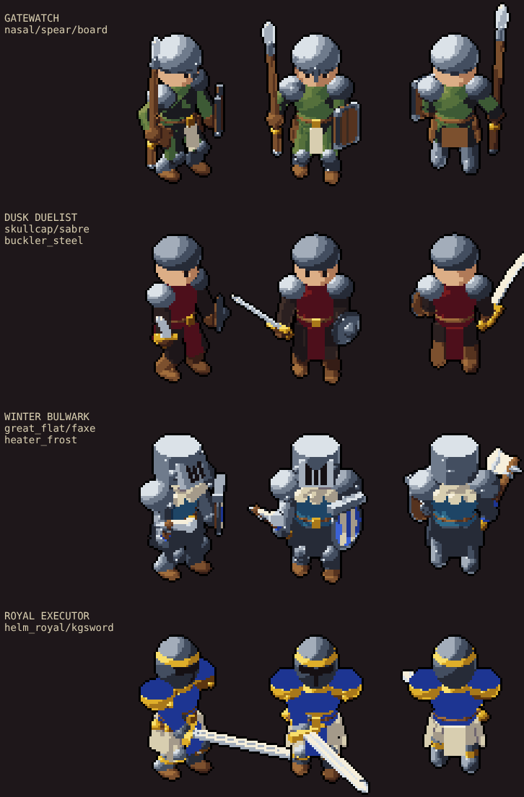
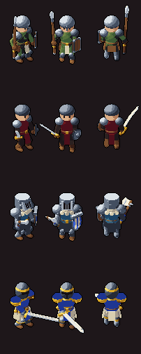
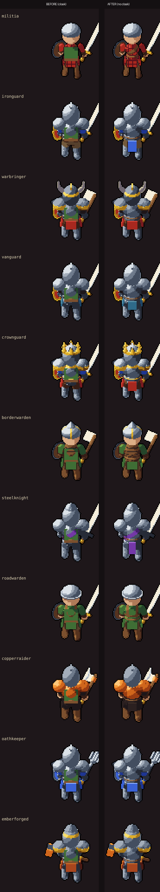
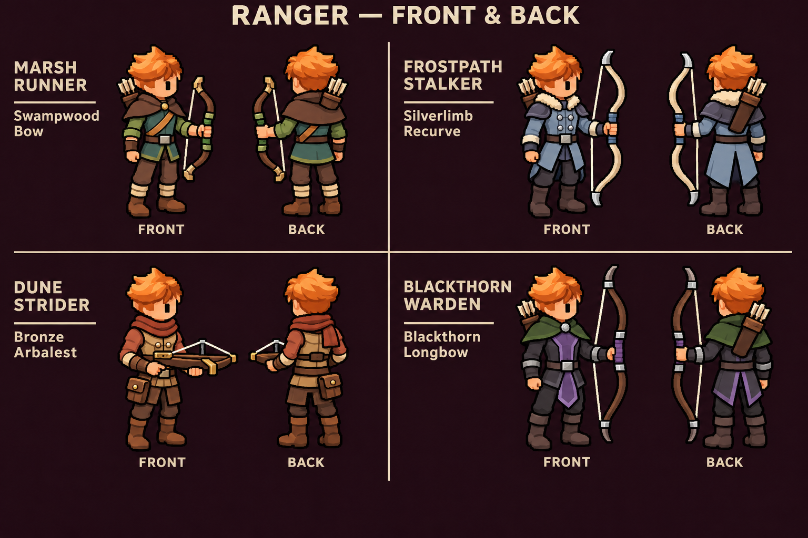
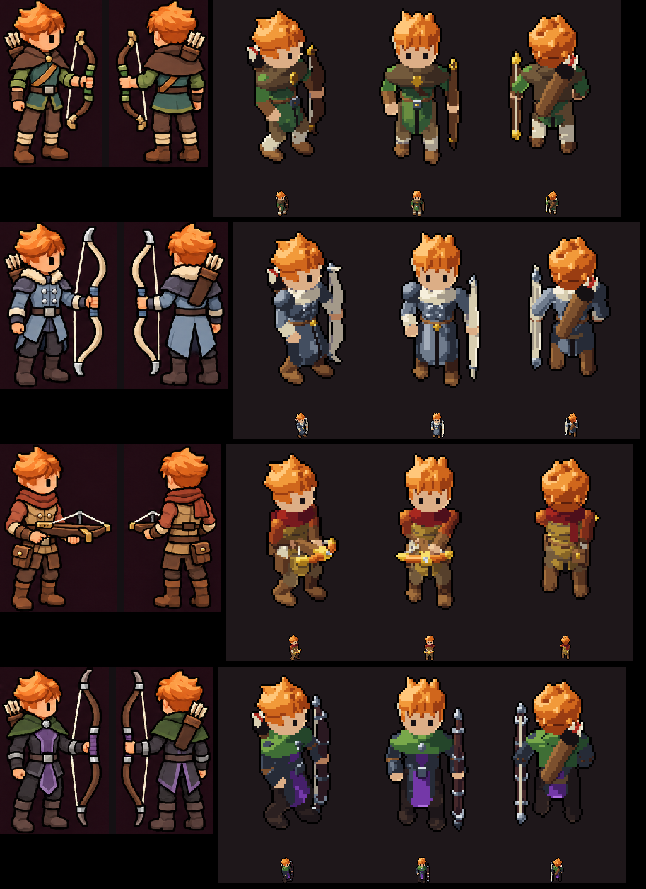
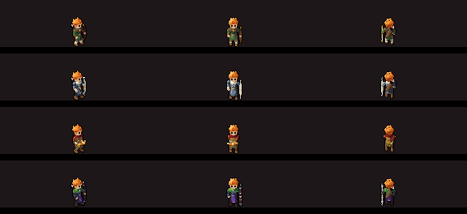
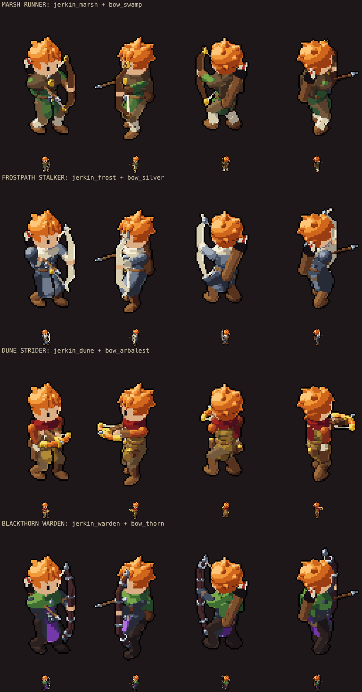
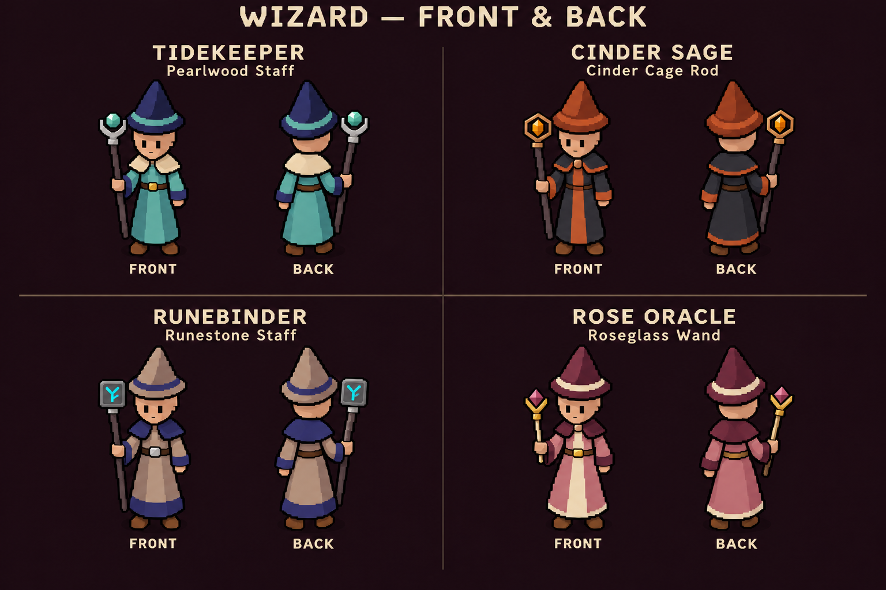
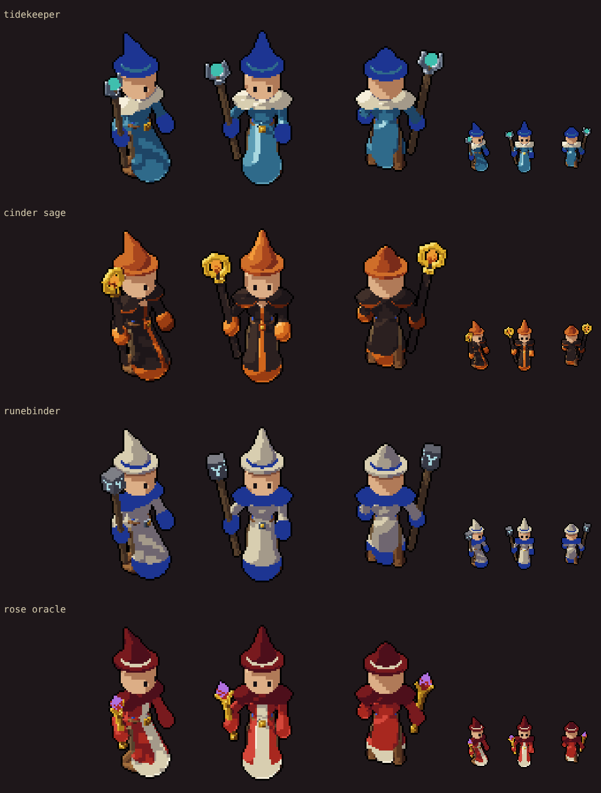

Twelve new hero sets from your front-and-back sheets, matched to both views, with the smaller 1.2x head. Each set was judged pass by pass against your concept, in both left/right orders. They are looks only until the main chat gives them item entries. Every other look and every monster renders exactly as before, and no frame clips.
Gatewatch (nasal helm, leaf spear, plank shield), Dusk Duelist (skullcap, wine tabard, sabre, steel buckler), Winter Bulwark (flat-top great helm, fur mantle, frost axe, striped heater), Royal Executor (gold-banded helm, navy and gold plate, greatsword in both hands). Your back views show no cape on any set, so the green cloak is gone from all 15 warrior sets; five of the earlier ones got a back panel in their color.

The four new sets: front-right, front and back

At phone size

Backs of the earlier warrior sets, before and after the cloak came off

Marsh Runner (brown hooded capelet, teal tunic, swampwood bow), Frostpath Stalker (pale coat with buttons, fur collar and tails, silver recurve), Dune Strider (rust scarf, quilted vest, belt pouches, bronze arbalest on the crossbow animations), Blackthorn Warden (green capelet, black coat with a violet tabard front and back, banded longbow).

The four new sets beside your front and back

At phone size

Shooting

Tidekeeper (teal robe, cream capelet, pearl staff), Cinder Sage (charcoal robe with orange trim, rust hat, gold cage rod), Runebinder (taupe robe, navy mantle and hem, glowing rune-stone staff), Rose Oracle (rose robe with a cream panel, wine mantle and hat, gold crystal wand).

The four new sets: front-right, front and back, plus phone size
